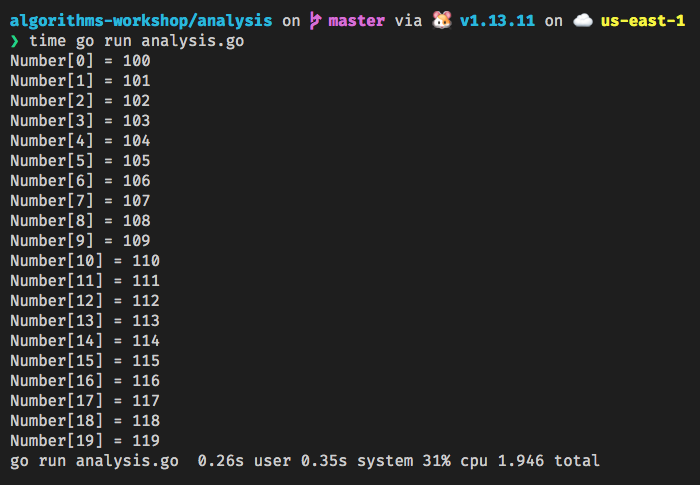

Algorithms Workshop
A workshop on Data Structures and Algorithms
Sections
- Definition of Algorithm
- Pseudocode
- Big O Notation
- Analysis of Algorithms
- The Halting Problem
- Math for Algorithms
- Data Structures
- Sorting Algorithms
- Searching Algorithms
- Graph Algorithms
- String Algorithms
- Linear Programming
- Dynamic Programming
Definition of Algorithms
Algorithm Definition Wikipedia
In mathematics and computer science, an algorithm (/ˈælɡərɪðəm/ (About this soundlisten)) is a finite sequence of well-defined, computer-implementable instructions, typically to solve a class of problems or to perform a computation. Algorithms are always unambiguous and are used as specifications for performing calculations, data processing, automated reasoning, and other tasks.
Think of algorithms like a recipe in a cookbook. You follow the instructions in the recipe to make your dish.
History of Algorithms
Timeline of Algorithms via Wikipedia
According to Wikipedia the earliest known algorithm were developed by the Egyptians between 1700 - 2000 BC.
This algorithm involved multiplying 2 numbers together.
In 1600 BC, the Babylonians developed the earliest known algorithm on factorization.
Usually in the university you are introduced to Euclid's Algorithm which was created by Euclid in 300 BC.
Please read the Algorithm Timeline I linked above for a more complete timeline of Algorithms.
Types of Algorithms
Types of Algorithms:
-
Simple Recursive Algorithms
-
Backtracking Algorithms
-
Divide and conquer algorithms
-
Dynamic programming algorithms
-
Greedy algorithms
-
Branch and bound algorithms
-
Brute force algorithms
-
Randomized algorithms
Definition of Recursive Algorithm
In computer science, recursion is a method of solving a problem where the solution depends on solutions to smaller instances of the same problem. Such problems can generally be solved by iteration, but this needs to identify and index the smaller instances at programming time. Recursion solves such recursive problems by using functions that call themselves from within their own code. The approach can be applied to many types of problems, and recursion is one of the central ideas of computer science.
Example of Recursion
func fibonacci(number int) int {
if number <= 1 {
return number
}
return fibonacci(number-1) + fibonacci(number-2)
}
Notice here that the fibonacci function is calling itself and had a base case to make sure that the program ends.
Backtracking Algorithms
Backtracking is a general algorithm for finding all (or some) solutions to some computational problems, notably constraint satisfaction problems, that incrementally builds candidates to the solutions, and abandons a candidate ("backtracks") as soon as it determines that the candidate cannot possibly be completed to a valid solution.
Please read more about the Eight Queens Puzzle for a Backtracking Problem.
Divide and Conquer Algorithms
In computer science, divide and conquer is an algorithm design paradigm based on multi-branched recursion. A divide-and-conquer algorithm works by recursively breaking down a problem into two or more sub-problems of the same or related type, until these become simple enough to be solved directly. The solutions to the sub-problems are then combined to give a solution to the original problem.
We will look later on in the workshop for specific Divide and Conquer Algorithms
Dynamic programming algorithms
Dynamic Programming (DP) is an algorithmic technique for solving an optimization problem by breaking it down into simpler subproblems and utilizing the fact that the optimal solution to the overall problem depends upon the optimal solution to its subproblems.
An example of Dynamic Programming Algorithm is a Dijkstra's Shortest Path Algorithm:
Pseudocode Example
function Dijkstra(Graph, source):
create vertex set Q
for each vertex v in Graph:
dist[v] ← INFINITY
prev[v] ← UNDEFINED
add v to Q
dist[source] ←
while Q is not empty:
u ← vertex in Q with min dist[u]
remove u from Q
for each neighbor v of u: // only v that are still in Q
alt ← dist[u] + length(u, v)
if alt < dist[v]:
dist[v] ← alt
prev[v] ← u
return dist[], prev[]
Greedy Algorithm
A greedy algorithm is any algorithm that follows the problem-solving heuristic of making the locally optimal choice at each stage. In many problems, a greedy strategy does not usually produce an optimal solution, but nonetheless a greedy heuristic may yield locally optimal solutions that approximate a globally optimal solution in a reasonable amount of time.
Greedy Algorithm Example
Prim's Algorithm
Read more about Prim's Algorithm at Wikipedia
Branch and Bound Algorithms
Branch and bound (BB, B&B, or BnB) is an algorithm design paradigm for discrete and combinatorial optimization problems, as well as mathematical optimization. A branch-and-bound algorithm consists of a systematic enumeration of candidate solutions by means of state space search: the set of candidate solutions is thought of as forming a rooted tree with the full set at the root. The algorithm explores branches of this tree, which represent subsets of the solution set. Before enumerating the candidate solutions of a branch, the branch is checked against upper and lower estimated bounds on the optimal solution, and is discarded if it cannot produce a better solution than the best one found so far by the algorithm.
Branch and Bound Algorithm Example
The Knapsack problem is an example where you can use Branch and Bound Algorithm to solve.
Brute force Algorithm
In computer science, brute-force search or exhaustive search, also known as generate and test, is a very general problem-solving technique and algorithmic paradigm that consists of systematically enumerating all possible candidates for the solution and checking whether each candidate satisfies the problem's statement.
Randomized Algorithm
A randomized algorithm is an algorithm that employs a degree of randomness as part of its logic. The algorithm typically uses uniformly random bits as an auxiliary input to guide its behavior, in the hope of achieving good performance in the "average case" over all possible choices of random bits. Formally, the algorithm's performance will be a random variable determined by the random bits; thus either the running time, or the output (or both) are random variables.
Randomized Algorithm Example
The Monte Carlo Algorithm is an example of a Randomized Algorithm.
Types of Data Structures
Please checkout the List of Data Structures Wikipedia for a complete list of Data Structures by type.
Common Data Structures:
Algorithms Workshop - Pseudocode
Pseudocode Definition
Definition of Pseudocode (Wikipedia)
In computer science, pseudocode is an informal high-level description of the operating principle of a computer program or other algorithm. It uses the structural conventions of a normal programming language, but is intended for human reading rather than machine reading. Pseudocode typically omits details that are essential for machine understanding of the algorithm, such as variable declarations, system-specific code and some subroutines. The programming language is augmented with natural language description details, where convenient, or with compact mathematical notation. The purpose of using pseudocode is that it is easier for people to understand than conventional programming language code, and that it is an efficient and environment-independent description of the key principles of an algorithm. It is commonly used in textbooks and scientific publications that are documenting various algorithms, and also in planning of computer program development, for sketching out the structure of the program before the actual coding takes place.
The pseudocode that you use can be a more formal syntax which is known as a Pidgin code.
Pidgin code is often used by more mathematically inclined individuals but is not strictly necessary.
I have personally seen people write Pseudocode like english language and some who write pseudocode in their day to day programming language.
Pseudocode Example
algorithm quicksort(A, lo, hi) is
if lo < hi then
p := partition(A, lo, hi)
quicksort(A, lo, p - 1)
quicksort(A, p + 1, hi)
algorithm partition(A, lo, hi) is
pivot := A[hi]
i := lo
for j := lo to hi do
if A[j] < pivot then
swap A[i] with A[j]
i := i + 1
swap A[i] with A[hi]
return i
Pidgin Code Example
This is using a mathematical style symbols:
\( \int x dx\; = \;\frac{x^2}{2} + C \)
Algorithms Workshop - Big-O Notation
What is Big-O Notation
In computer science, big O notation is used to classify algorithms according to how their run time or space requirements grow as the input size grows. In analytic number theory, big O notation is often used to express a bound on the difference between an arithmetical function and a better understood approximation; a famous example of such a difference is the remainder term in the prime number theorem.
When talking about data structures and algorithms you will frequently encounter Big O Notation for a given algorithm.
Big-O, Little-O, Theta, and Omega
When talking about algorithms Big O, Little o, Omega and Theta are formal notational methods that state the growth of an algorithm in terms of efficiency and storage.
Big-O notation
Big-O notation is denoted by \( \mathcal{O}(n) \).
Little-O notation
Little-O notation is denoted by \( o(n) \)
Theta
Theta notation is denoted by \( \Theta(n) \)
Omega
Omega notation is denoted by \( \Omega(n) \)
Difference between Big-O, Little-O, Theta and Omega
The differences between Big-O, Little-O, Theta, and Omega center around constraints and growth rates.
Informal explanation for Big-O, Little-O, Theta and Omega
Big-O: \( T(n) \; is \; \mathcal{O}(f(n)) \; \rightarrow \) f(n) describes upper bound for T(n)
Little-O: \( T(n) \; is \; o(f(n)) \; \rightarrow \) f(n) describes the lower bound for T(n)
Theta: \( T(n) \; is \; \Theta(f(n)) \; \rightarrow \) f(n) describes the exact bound for T(n)
Omega: \( T(n) \; is \; \Omega(f(n)) \; \rightarrow \) f(n) is the upper bound for T(n) but T(n) can never be equal to f(n)
Algorithms Workshop - Analysis of Algorithms
Cost Model
Cost Models rely on analysis of the actual execution time and the time required to perform an individual step.
Orders of Growth
An algorithm is said to show a growth rate on the order of a mathematical functon and can be constrained with an upper bound as we saw in the Big-O section of the workshop.
Cost Analysis 1
Sample Code:
package main
import (
"fmt"
)
func main() {
var number [20]int
for n := 0; n < 20; n++ {
number[n] = n + 100
fmt.Printf("Number[%d] = %d\n", n, number[n])
}
}

Notice in my laptop which is a MacBook 2015 with 2.2 GHz Intel Core i7 processor this program took 0.15s user seconds
The computational time taken here is 20 * t and t is the time that it takes to add 2 integers and then update an array.
The t value here will vary depending on the computer hardware.
Analysis of program
\( T(n) \; = \; \mathcal{O}(f(n)) \; \rightarrow Linear Time Complexity \)
Cost Analysis 2
Sample Code:
func quadraticComplexity(iteration int) int {
var computation int
for i := 1; i <= iteration; i++ {
for j := 1; j <= iteration; j++ {
computation = i * j
fmt.Println(computation)
}
}
return computation
}
time go test
........................
100
PASS
ok github.com/jbelmont/algorithms-workshop/analysis/quadratic 0.253s
go test 0.38s user 0.28s system 100% cpu 0.655 total
Analysis of program
\( T(n) \; = \mathcal{O}({n^2}) \; \rightarrow Quadratic \; Time \; Complexity \)
Cost Analysis 3
Sample Code:
func cubicComplexity() int {
const iteration = 10
var threeDArr [iteration][iteration][iteration]int
var compute int
for i := 0; i < iteration; i++ {
for j := 0; j < iteration; j++ {
for k := 0; k < iteration; k++ {
compute = (i + j) * k
threeDArr[i][j][k] = compute
fmt.Printf("Value in threeDArr[i][j][k] = %d\n", threeDArr[i][j][k])
}
}
}
return compute
}
time go test
.............................................
Value in threeDArr[i][j][k] = 162
PASS
ok github.com/jbelmont/algorithms-workshop/analysis/cubic 0.288s
go test 0.38s user 0.24s system 101% cpu 0.601 total
Analysis of program
\( T(n) \; = \mathcal{O}({n^3}) \; \rightarrow \; Cubic \)
Cost Analysis 4
Sample Code:
package logarithmic
import "fmt"
type Tree struct {
LNode *Tree
Val int
RNode *Tree
}
func (t *Tree) insert(val int) {
if t != nil {
if t.LNode == nil {
t.LNode = &Tree{
nil, val, nil,
}
} else if t != nil && t.RNode == nil {
t.RNode = &Tree{
nil, val, nil,
}
} else {
if t.LNode != nil {
t.LNode.insert(val)
} else {
t.RNode.insert(val)
}
}
} else {
t = &Tree{
nil, val, nil,
}
}
}
func printTree(t *Tree) {
if t != nil {
fmt.Printf("Tree value is %v\n", t.Val)
fmt.Printf("Left Tree Node ")
printTree(t.LNode)
fmt.Printf("Right Tree Node ")
printTree(t.RNode)
} else {
fmt.Printf("Nil\n")
}
}

Analysis of program
\( T(n) \; = \mathcal{O}(log \; n) \; \rightarrow \; Logarithmic \)
An algorithms has a logarithmic complexity if the time it takes to process it is proportional to the logarithm of its inputs.
The logarithm base is usually in base 2.
The tree we used here is a binary tree with a Left Node and a Right Node.
The insert method is of \( \mathcal{O}(log \; n) \) where n i sthe number of nodes.
Algorithms Workshop - The Halting Problem
Halting Problem Defined
Halting Problem (Wikipedia Definition)
In computability theory, the halting problem is the problem of determining, from a description of an arbitrary computer program and an input, whether the program will finish running, or continue to run forever. Alan Turing proved in 1936 that a general algorithm to solve the halting problem for all possible program-input pairs cannot exist. For any program f that might determine if programs halt, a "pathological" program g called with an input can pass its own source and its input to f and then specifically do the opposite of what f predicts g will do. No f can exist that handles this case. A key part of the proof was a mathematical definition of a computer and program, which became known as a Turing machine; the halting problem is undecidable over Turing machines. Turing's proof is one of the first cases of decision problems to be concluded. The theoretical conclusion that it is not solvable is significant to practical computing efforts, defining a class of applications which no programming invention can possibly perform perfectly.
The Halting problem is important because it helps show the difficulty of a given algorithm.
It pretty much shows that sometimes you can only guess at a problem and cannot come up with an actual way to solve the problem.
Historical Background
The halting problem is historically important because it was one of the first problems to be proved undecidable. (Turing's proof went to press in May 1936, whereas Alonzo Church's proof of the undecidability of a problem in the lambda calculus had already been published in April 1936 [Church, 1936].) Subsequently, many other undecidable problems have been described.
Proof by Contradiction
Alan Turing proved the Halting Problem through Contradiction.
What is an example of a Halting Problem
Lets say you write a computer program and the program doesn't stop and just hangs.
So you ask yourself will this program Halt or stop or will it continue to run forever.
Algorithms Workshop - Math for Algorithms
Summations
Summation (Wikipedia Definition)
In mathematics, summation is the addition of a sequence of any kind of numbers, called addends or summands; the result is their sum or total. Beside numbers, other types of values can be summed as well: functions, vectors, matrices, polynomials and, in general, elements of any type of mathematical objects on which an operation denoted "+" is defined.
Sets
In mathematics, a set is a well-defined collection of distinct objects, considered as an object in its own right. The arrangement of the objects in the set does not matter. A set may be denoted by placing its objects between a pair of curly braces. For example, the numbers 2, 4, and 6 are distinct objects when considered separately; when considered collectively, they form a single set of size three, written as {2, 4, 6}, which could also be written as {2, 6, 4}, {4, 2, 6}, {4, 6, 2}, {6, 2, 4} or {6, 4, 2}.
Graphs
In mathematics, and more specifically in graph theory, a graph is a structure amounting to a set of objects in which some pairs of the objects are in some sense "related". The objects correspond to mathematical abstractions called vertices (also called nodes or points) and each of the related pairs of vertices is called an edge (also called link or line). Typically, a graph is depicted in diagrammatic form as a set of dots or circles for the vertices, joined by lines or curves for the edges. Graphs are one of the objects of study in discrete mathematics.
Counting
Counting (Wikipedia Definition)
Counting is the process of determining the number of elements of a finite set of objects. The traditional way of counting consists of continually increasing a (mental or spoken) counter by a unit for every element of the set, in some order, while marking (or displacing) those elements to avoid visiting the same element more than once, until no unmarked elements are left; if the counter was set to one after the first object, the value after visiting the final object gives the desired number of elements. The related term enumeration refers to uniquely identifying the elements of a finite (combinatorial) set or infinite set by assigning a number to each element.
Probability
Probability (Wikipedia Definition)
Probability is the branch of mathematics concerning numerical descriptions of how likely an event is to occur, or how likely it is that a proposition is true. The probability of an event is a number between 0 and 1, where, roughly speaking, 0 indicates impossibility of the event and 1 indicates certainty. The higher the probability of an event, the more likely it is that the event will occur. A simple example is the tossing of a fair (unbiased) coin. Since the coin is fair, the two outcomes ("heads" and "tails") are both equally probable; the probability of "heads" equals the probability of "tails"; and since no other outcomes are possible, the probability of either "heads" or "tails" is 1/2 (which could also be written as 0.5 or 50%).
Matrices
Matrices (Wikipedia Definition)
In mathematics, a matrix (plural matrices) is a rectangular array or table (see irregular matrix) of numbers, symbols, or expressions, arranged in rows and columns. For example, the dimension of the matrix below is 2 × 3 (read "two by three"), because there are two rows and three columns:
\[ \begin{equation*} M = \begin{bmatrix} 1 & 9 & -13 \\20 & 5 & -6 \end{bmatrix} \end{equation*} \]
Algorithms Workshop - Data Structures
Definition of a Data Structure
Data Structure (Wikipedia Definition)
In computer science, a data structure is a data organization, management, and storage format that enables efficient access and modification. More precisely, a data structure is a collection of data values, the relationships among them, and the functions or operations that can be applied to the data.
Types of Data Structures
Linear Data Structures
A data structure is linear if its elements form a sequence:
- Lists
- Sets
- Tuples
- Queues
- Stacks
NonLinear Data Structures
A data structure is non-linear when an element is connected to many other elements
- Trees
- Tables
- Hash
- Containers
Dynamic Data Structures
- Dictionaries
- TreeSets
- Sequences
Set Operations
In computer science, a set is an abstract data type that can store unique values, without any particular order. It is a computer implementation of the mathematical concept of a finite set. Unlike most other collection types, rather than retrieving a specific element from a set, one typically tests a value for membership in a set.
Union
The union of s and t returns all the elements of set s and set t
Intersection
The intersection of s and t return the all the elements that belong to A and to B
Add
Add is a method that adds an element to the set
Remove
Remove is a method that removes an element from the set
Set Implementation
Set Test Run
Stack Operations
In computer science, a stack is an abstract data type that serves as a collection of elements, with two main principal operations: push, which adds an element to the collection, and pop, which removes the most recently added element that was not yet removed.
Push
Add an element to the stack
Pop
Remove most recent element from the stack and return it.
Stack Implementation
List Test Run
List Operations
In computer science, a list or sequence is an abstract data type that represents a countable number of ordered values, where the same value may occur more than once. An instance of a list is a computer representation of the mathematical concept of a tuple or finite sequence; the (potentially) infinite analog of a list is a stream. Lists are a basic example of containers, as they contain other values. If the same value occurs multiple times, each occurrence is considered a distinct item.
Append
Operation to append an element to a list
Prepend
Operation to prepend an element to a list
Head
Operation to find the first element of a list
Empty
Operation to determine whether or not a list is empty
Doubly LinkedList Implementation
Doubly LinkedList Implementation
Singly LinkedList Implementation
Singly LinkedList Implementation
Singly List Test Run
Queue Operations
In computer science, a queue is a collection of entities that are maintained in a sequence and can be modified by the addition of entities at one end of the sequence and the removal of entities from the other end of the sequence. By convention, the end of the sequence at which elements are added is called the back, tail, or rear of the queue, and the end at which elements are removed is called the head or front of the queue, analogously to the words used when people line up to wait for goods or services.
New
Should return a new queue
Enqueue
Operation should add item to the queue
Dequeue
Operation should remove and return first item added to the queue in FIFO order
Queue Implementation
Queue Test Run
Tree Operations
In computer science, a tree is a widely used abstract data type that simulates a hierarchical tree structure, with a root value and subtrees of children with a parent node, represented as a set of linked nodes.
A tree data structure can be defined recursively as a collection of nodes (starting at a root node), where each node is a data structure consisting of a value, together with a list of references to nodes (the "children"), with the constraints that no reference is duplicated, and none points to the root.
Table Operations
A table is an arrangement of data in rows and columns, or possibly in a more complex structure. Tables are widely used in communication, research, and data analysis. Tables appear in print media, handwritten notes, computer software, architectural ornamentation, traffic signs, and many other places. The precise conventions and terminology for describing tables vary depending on the context. Further, tables differ significantly in variety, structure, flexibility, notation, representation and use. In books and technical articles, tables are typically presented apart from the main text in numbered and captioned floating blocks.
A Table has rows and columns
Table Implementation
Table Test Run
Dictionary Operations
A dictionary can be thought of as a set of key, value pairs. Dictionaries are often used in stoaring a set of data items.
Dictionary Implementation
Dictionary Test Run
Algorithms Workshop - Sorting Algorithms
Sorting Algorithm Definition
Sorting Algorithm (Wikipedia Definition)
In computer science, a sorting algorithm is an algorithm that puts elements of a list in a certain order. The most frequently used orders are numerical order and lexicographical order. Efficient sorting is important for optimizing the efficiency of other algorithms (such as search and merge algorithms) that require input data to be in sorted lists. Sorting is also often useful for canonicalizing data and for producing human-readable output. More formally, the output of any sorting algorithm must satisfy two conditions:
The output is in nondecreasing order (each element is no smaller than the previous element according to the desired total order);
The output is a permutation (a reordering, yet retaining all of the original elements) of the input.
Sorting in Golang
In Golang you can use the Sort package to sort slices
You define the following methods:
- Len
- Swap
- Less
Sorting Code in Action
package sorting
import (
"fmt"
)
type Soldier struct {
Name string
Rank string
Age int
YearsOfService int
}
func (s Soldier) ToString() string {
return fmt.Sprintf(
"Name: %s\nRank: %s\nAge: %d\nYearsOfService: %d\n",
s.Name,
s.Rank,
s.Age,
s.YearsOfService,
)
}
type SortByYearsOfService []Soldier
func (s SortByYearsOfService) Len() int {
return len(s)
}
func (s SortByYearsOfService) Swap(i int, j int) {
s[i], s[j] = s[j], s[i]
}
func (s SortByYearsOfService) Less(i int, j int) bool {
return s[i].YearsOfService < s[j].YearsOfService
}
Sorting Test
Bubble Sort Algorithm
Bubble Sort (Wikipedia Definition)
Bubble sort, sometimes referred to as sinking sort, is a simple sorting algorithm that repeatedly steps through the list, compares adjacent elements and swaps them if they are in the wrong order. The pass through the list is repeated until the list is sorted. The algorithm, which is a comparison sort, is named for the way smaller or larger elements "bubble" to the top of the list.
Pseudocode Implementation
procedure bubbleSort(A : list of sortable items)
n := length(A)
repeat
swapped := false
for i := 1 to n-1 inclusive do
/* if this pair is out of order */
if A[i-1] > A[i] then
/* swap them and remember something changed */
swap(A[i-1], A[i])
swapped := true
end if
end for
until not swapped
end procedure
Bubble Sort Implementation
package bubblesort
func bubblesort(numbers []int, numOfElements int) int {
var swapTotal int
for i := 0; i < numOfElements; i++ {
var numberOfSwaps int
for j := 0; j < numOfElements-1; j++ {
if numbers[j] > numbers[j+1] {
// Use go way to swap numbers instead of longer version in other languages.
numbers[j], numbers[j+1] = numbers[j+1], numbers[j]
numberOfSwaps += 1
}
}
swapTotal += numberOfSwaps
// If no elements were swapped during a traversal, array is sorted
if numberOfSwaps == 0 {
break
}
}
return swapTotal
}
Bubble Sort Test
Quick Sort Algorithm
Quick Sort (Wikipedia Definition)
Quicksort (sometimes called partition-exchange sort) is an efficient sorting algorithm. Developed by British computer scientist Tony Hoare in 1959 and published in 1961, it is still a commonly used algorithm for sorting. When implemented well, it can be about two or three times faster than its main competitors, merge sort and heapsort.
Lomuto Partitiion Scheme
Lomuto partition scheme This scheme is attributed to Nico Lomuto and popularized by Bentley in his book Programming Pearls and Cormen et al. in their book Introduction to Algorithms. This scheme chooses a pivot that is typically the last element in the array. The algorithm maintains index i as it scans the array using another index j such that the elements at lo through i-1 (inclusive) are less than the pivot, and the elements at i through j (inclusive) are equal to or greater than the pivot. As this scheme is more compact and easy to understand, it is frequently used in introductory material, although it is less efficient than Hoare's original scheme e.g., when all elements are equal. This scheme degrades to \( \mathcal{O}(n^2) \) when the array is already in order.There have been various variants proposed to boost performance including various ways to select pivot, deal with equal elements, use other sorting algorithms such as Insertion sort for small arrays and so on. In pseudocode, a quicksort that sorts elements at lo through hi (inclusive) of an array A can be expressed as:[1
Lomuto Pseudocode
algorithm quicksort(A, lo, hi) is
if lo < hi then
p := partition(A, lo, hi)
quicksort(A, lo, p - 1)
quicksort(A, p + 1, hi)
algorithm partition(A, lo, hi) is
pivot := A[hi]
i := lo
for j := lo to hi do
if A[j] < pivot then
swap A[i] with A[j]
i := i + 1
swap A[i] with A[hi]
return i
QuickSort Lomuto Implementation
package quicksort
func partition(numbers []int, low, high int) int {
i := low
pivot := numbers[high]
for j := low; j < high; j++ {
if numbers[j] < pivot {
// Use go way to swap numbers instead of longer version in other languages.
numbers[i], numbers[j] = numbers[j], numbers[i]
i += 1
}
}
numbers[i], numbers[high] = numbers[high], numbers[i]
return i
}
func quicksort(numbers []int, low, high int) {
if low < high {
p := partition(numbers, low, high)
quicksort(numbers, low, p-1)
quicksort(numbers, p+1, high)
}
}
QuickSort Lomuto Test Run
Selection Sort Algorithm
Selection Sort (Wikipedia Definition)
In computer science, selection sort is an in-place comparison sorting algorithm. It has an \( \mathcal{O}(n^2) \) time complexity, which makes it inefficient on large lists, and generally performs worse than the similar insertion sort. Selection sort is noted for its simplicity and has performance advantages over more complicated algorithms in certain situations, particularly where auxiliary memory is limited.
Selection Sort Implementation
package selectionsort
func selectionSort(elements []int) {
count := len(elements) - 1
for i := 0; i < count; i++ {
minimum := i
var j int
for j = i + 1; j <= count; j++ {
if elements[j] < elements[minimum] {
minimum = j
}
}
// Swap out elements
elements[i], elements[minimum] = elements[minimum], elements[i]
}
}
Selection Sort Test Run
Algorithms Workshop - Search Algorithms
Search Algorithm Definition
Search Algorithm (Wikipedia Definition)
In computer science, a search algorithm is any algorithm which solves the search problem, namely, to retrieve information stored within some data structure, or calculated in the search space of a problem domain, either with discrete or continuous values. Specific applications of search algorithms include:
Problems in combinatorial optimization, such as:
- The vehicle routing problem, a form of shortest path problem
- The knapsack problem: Given a set of items, each with a weight and a value, determine the number of each item to include in a collection so that the total weight is less than or equal to a given limit and the total value is as large as possible.
- The nurse scheduling problem
- Problems in constraint satisfaction, such as:
- The map coloring problem
- Filling in a sudoku or crossword puzzle
- In game theory and especially combinatorial game theory, choosing the best move to make next
- Finding a combination or password from the whole set of possibilities
- Factoring an integer (an important problem in cryptography)
- Optimizing an industrial process, such as a chemical reaction, by changing the parameters of the process
- Retrieving a record from a database
- Finding the maximum or minimum value in a list or array
- Checking to see if a given value is present in a set of values
Linear Search Algorithm
Linear Search (Wikipedia Definition)
In computer science, a linear search or sequential search is a method for finding an element within a list. It sequentially checks each element of the list until a match is found or the whole list has been searched.
Linear Search Basic Algorithm

Linear Search Implementation
package linearsearch
func search(elements []int, searchElem int) int {
for index, element := range elements {
if element == searchElem {
return index
}
}
return -1
}
Linear Search Test
Binary Search Algorithm
In computer science, binary search, also known as half-interval search, logarithmic search,or binary chop, is a search algorithm that finds the position of a target value within a sorted array. Binary search compares the target value to the middle element of the array. If they are not equal, the half in which the target cannot lie is eliminated and the search continues on the remaining half, again taking the middle element to compare to the target value, and repeating this until the target value is found. If the search ends with the remaining half being empty, the target is not in the array.
Binary Search Leftmost Element Pseudocode
function binary_search_leftmost(A, n, T):
L := 0
R := n
while L < R:
m := floor((L + R) / 2)
if A[m] < T:
L := m + 1
else:
R := m
return L
Go standard library implementation
The sort.Search implements the leftmost element procedure for the Binary Search Algorithm:
// Search uses binary search to find and return the smallest index i
// in [0, n) at which f(i) is true, assuming that on the range [0, n),
// f(i) == true implies f(i+1) == true. That is, Search requires that
// f is false for some (possibly empty) prefix of the input range [0, n)
// and then true for the (possibly empty) remainder; Search returns
// the first true index. If there is no such index, Search returns n.
// (Note that the "not found" return value is not -1 as in, for instance,
// strings.Index.)
// Search calls f(i) only for i in the range [0, n).
//
// A common use of Search is to find the index i for a value x in
// a sorted, indexable data structure such as an array or slice.
// In this case, the argument f, typically a closure, captures the value
// to be searched for, and how the data structure is indexed and
// ordered.
//
// For instance, given a slice data sorted in ascending order,
// the call Search(len(data), func(i int) bool { return data[i] >= 23 })
// returns the smallest index i such that data[i] >= 23. If the caller
// wants to find whether 23 is in the slice, it must test data[i] == 23
// separately.
//
// Searching data sorted in descending order would use the <=
// operator instead of the >= operator.
//
// To complete the example above, the following code tries to find the value
// x in an integer slice data sorted in ascending order:
//
// x := 23
// i := sort.Search(len(data), func(i int) bool { return data[i] >= x })
// if i < len(data) && data[i] == x {
// // x is present at data[i]
// } else {
// // x is not present in data,
// // but i is the index where it would be inserted.
// }
//
// As a more whimsical example, this program guesses your number:
//
// func GuessingGame() {
// var s string
// fmt.Printf("Pick an integer from 0 to 100.\n")
// answer := sort.Search(100, func(i int) bool {
// fmt.Printf("Is your number <= %d? ", i)
// fmt.Scanf("%s", &s)
// return s != "" && s[0] == 'y'
// })
// fmt.Printf("Your number is %d.\n", answer)
// }
//
func Search(n int, f func(int) bool) int {
// Define f(-1) == false and f(n) == true.
// Invariant: f(i-1) == false, f(j) == true.
i, j := 0, n
for i < j {
h := int(uint(i+j) >> 1) // avoid overflow when computing h
// i ≤ h < j
if !f(h) {
i = h + 1 // preserves f(i-1) == false
} else {
j = h // preserves f(j) == true
}
}
// i == j, f(i-1) == false, and f(j) (= f(i)) == true => answer is i.
return i
}
Binary Search Test
Algorithms Workshop - Graph Algorithms
Graph Theory
Graph theory (Wikipedia Definition)
In mathematics, graph theory is the study of graphs, which are mathematical structures used to model pairwise relations between objects. A graph in this context is made up of vertices (also called nodes or points) which are connected by edges (also called links or lines). A distinction is made between undirected graphs, where edges link two vertices symmetrically, and directed graphs, where edges link two vertices asymmetrically; see Graph (discrete mathematics) for more detailed definitions and for other variations in the types of graph that are commonly considered. Graphs are one of the prime objects of study in discrete mathematics.
Depth-first search algorithm
Depth-first search (DFS) is an algorithm for traversing or searching tree or graph data structures. The algorithm starts at the root node (selecting some arbitrary node as the root node in the case of a graph) and explores as far as possible along each branch before backtracking.
Depth-first search recursive pseudocode
procedure DFS(G, v) is
label v as discovered
for all directed edges from v to w that are in G.adjacentEdges(v) do
if vertex w is not labeled as discovered then
recursively call DFS(G, w)
Depth-first search simple implementation
package depthfirstsearch
type Node struct {
Value string
Left *Node
Right *Node
}
func (n *Node) Search(f func(*Node)) {
if n == nil {
return
}
n.Left.Search(f)
f(n)
n.Right.Search(f)
}
func (n *Node) Insert(v string) {
if v < n.Value {
if n.Left == nil {
n.Left = &Node{
Value: v,
}
} else {
n.Left.Insert(v)
}
} else {
if n.Right == nil {
n.Right = &Node{
Value: v,
}
} else {
n.Right.Insert(v)
}
}
}
Depth-first search Test Run
Social Graph
Social Graph (Wikipedia Definition)
The social graph is a graph that represents social relations between entities. In short, it is a model or representation of a social network, where the word graph has been taken from graph theory. The social graph has been referred to as "the global mapping of everybody and how they're related".
Social Graph Sample Implementation
package networkgraph
type Graph struct {
Size int
Links [][]Link
}
type Link struct {
VertexA int
VertexB int
Weight int
}
func (g Graph) New(num int) Graph {
g.Size = num
g.Links = make([][]Link, num)
return g
}
func (g *Graph) Add(vertexA int, vertexB int, weight int) {
g.Links[vertexA] = append(
g.Links[vertexA],
Link{
VertexA: vertexA,
VertexB: vertexB,
Weight: weight,
},
)
}
Social Graph Test Run
Algorithms Workshop - String Algorithms
String Definition in Computer Science
Strings (Wikipedia Definition)
In computer programming, a string is traditionally a sequence of characters, either as a literal constant or as some kind of variable. The latter may allow its elements to be mutated and the length changed, or it may be fixed (after creation). A string is generally considered as a data type and is often implemented as an array data structure of bytes (or words) that stores a sequence of elements, typically characters, using some character encoding. String may also denote more general arrays or other sequence (or list) data types and structures.
Depending on the programming language and precise data type used, a variable declared to be a string may either cause storage in memory to be statically allocated for a predetermined maximum length or employ dynamic allocation to allow it to hold a variable number of elements.
Types of String Algorithms
-
String Searching
- Brute Force String Search
- Deterministic Finite Automaton (DFA) Search
- Knuth Morris Pratt Algorithms
-
String Sorting
-
String Matching
-
String Collation
Brute Force String Searching Algorithm
package brutesearch
func search(text string, pattern string) int {
var index int
for i, ch := range text {
if string(ch) == pattern {
index = i
}
}
return index
}
This is a naive search implementation
Rabin Karp Golang Source Code
// Index returns the index of the first instance of substr in s, or -1 if substr is not present in s.
func Index(s, substr string) int {
n := len(substr)
switch {
case n == 0:
return 0
case n == 1:
return IndexByte(s, substr[0])
case n == len(s):
if substr == s {
return 0
}
return -1
case n > len(s):
return -1
case n <= bytealg.MaxLen:
// Use brute force when s and substr both are small
if len(s) <= bytealg.MaxBruteForce {
return bytealg.IndexString(s, substr)
}
c0 := substr[0]
c1 := substr[1]
i := 0
t := len(s) - n + 1
fails := 0
for i < t {
if s[i] != c0 {
// IndexByte is faster than bytealg.IndexString, so use it as long as
// we're not getting lots of false positives.
o := IndexByte(s[i:t], c0)
if o < 0 {
return -1
}
i += o
}
if s[i+1] == c1 && s[i:i+n] == substr {
return i
}
fails++
i++
// Switch to bytealg.IndexString when IndexByte produces too many false positives.
if fails > bytealg.Cutover(i) {
r := bytealg.IndexString(s[i:], substr)
if r >= 0 {
return r + i
}
return -1
}
}
return -1
}
c0 := substr[0]
c1 := substr[1]
i := 0
t := len(s) - n + 1
fails := 0
for i < t {
if s[i] != c0 {
o := IndexByte(s[i:t], c0)
if o < 0 {
return -1
}
i += o
}
if s[i+1] == c1 && s[i:i+n] == substr {
return i
}
i++
fails++
if fails >= 4+i>>4 && i < t {
// See comment in ../bytes/bytes_generic.go.
j := indexRabinKarp(s[i:], substr)
if j < 0 {
return -1
}
return i + j
}
}
return -1
}
func indexRabinKarp(s, substr string) int {
// Rabin-Karp search
hashss, pow := hashStr(substr)
n := len(substr)
var h uint32
for i := 0; i < n; i++ {
h = h*primeRK + uint32(s[i])
}
if h == hashss && s[:n] == substr {
return 0
}
for i := n; i < len(s); {
h *= primeRK
h += uint32(s[i])
h -= pow * uint32(s[i-n])
i++
if h == hashss && s[i-n:i] == substr {
return i - n
}
}
return -1
}
// hashStr returns the hash and the appropriate multiplicative
// factor for use in Rabin-Karp algorithm.
func hashStr(sep string) (uint32, uint32) {
hash := uint32(0)
for i := 0; i < len(sep); i++ {
hash = hash*primeRK + uint32(sep[i])
}
var pow, sq uint32 = 1, primeRK
for i := len(sep); i > 0; i >>= 1 {
if i&1 != 0 {
pow *= sq
}
sq *= sq
}
return hash, pow
}
String Search Test Run
Algorithms Workshop - Linear Programming
Linear Programming Definition
Linear Programming (Wikipedia Definition)
Linear programming (LP, also called linear optimization) is a method to achieve the best outcome (such as maximum profit or lowest cost) in a mathematical model whose requirements are represented by linear relationships. Linear programming is a special case of mathematical programming (also known as mathematical optimization).
More formally, linear programming is a technique for the optimization of a linear objective function, subject to linear equality and linear inequality constraints. Its feasible region is a convex polytope, which is a set defined as the intersection of finitely many half spaces, each of which is defined by a linear inequality. Its objective function is a real-valued affine (linear) function defined on this polyhedron. A linear programming algorithm finds a point in the polytope where this function has the smallest (or largest) value if such a point exists.
Linear Programming Algorithms
Simplex Algorithm
Simplex Algorith (Wikipedia Definition)
The name of the algorithm is derived from the concept of a simplex and was suggested by T. S. Motzkin. Simplices are not actually used in the method, but one interpretation of it is that it operates on simplicial cones, and these become proper simplices with an additional constraint.The simplicial cones in question are the corners (i.e., the neighborhoods of the vertices) of a geometric object called a polytope. The shape of this polytope is defined by the constraints applied to the objective function.
Algorithmic Steps
Criss-cross Algorithm
Criss-cross Algorithm (Wikipedia Definition)
In mathematical optimization, the criss-cross algorithm is any of a family of algorithms for linear programming. Variants of the criss-cross algorithm also solve more general problems with linear inequality constraints and nonlinear objective functions; there are criss-cross algorithms for linear-fractional programming problems, quadratic-programming problems, and linear complementarity problems.
Algorithms Workshop - Dynamic Programming
Dynamic Programming Definition
Dynamic Programming (Wikipedia Definition)
Dynamic programming is both a mathematical optimization method and a computer programming method. The method was developed by Richard Bellman in the 1950s and has found applications in numerous fields, from aerospace engineering to economics.
In both contexts it refers to simplifying a complicated problem by breaking it down into simpler sub-problems in a recursive manner. While some decision problems cannot be taken apart this way, decisions that span several points in time do often break apart recursively. Likewise, in computer science, if a problem can be solved optimally by breaking it into sub-problems and then recursively finding the optimal solutions to the sub-problems, then it is said to have optimal substructure.
Dynamic Programming Algorithms and Problems
Dijkstra's Algorithm
Dijkstra's algorithm (or Dijkstra's Shortest Path First algorithm, SPF algorithm) is an algorithm for finding the shortest paths between nodes in a graph, which may represent, for example, road networks. It was conceived by computer scientist Edsger W. Dijkstra in 1956 and published three years later.
The algorithm exists in many variants. Dijkstra's original algorithm found the shortest path between two given nodes, but a more common variant fixes a single node as the "source" node and finds shortest paths from the source to all other nodes in the graph, producing a shortest-path tree.
Dijkstra Algorithm Pseudocode
function Dijkstra(Graph, source):
create vertex set Q
for each vertex v in Graph:
dist[v] ← INFINITY
prev[v] ← UNDEFINED
add v to Q
dist[source] ←
while Q is not empty:
u ← vertex in Q with min dist[u]
remove u from Q
for each neighbor v of u: // only v that are still in Q
alt ← dist[u] + length(u, v)
if alt < dist[v]:
dist[v] ← alt
prev[v] ← u
return dist[], prev[]
Dijkstra Golang Implementation
Check out this blog post on Dijkstra Algorithm
Algorithms Workshop - Numerical Analysis
Numerical Analysis Definition
Numerical analysis is the study of algorithms that use numerical approximation (as opposed to symbolic manipulations) for the problems of mathematical analysis (as distinguished from discrete mathematics). Numerical analysis naturally finds application in all fields of engineering and the physical sciences, but in the 21st century also the life sciences, social sciences, medicine, business and even the arts have adopted elements of scientific computations. The growth in computing power has revolutionized the use of realistic mathematical models in science and engineering, and subtle numerical analysis is required to implement these detailed models of the world. For example, ordinary differential equations appear in celestial mechanics (predicting the motions of planets, stars and galaxies); numerical linear algebra is important for data analysis; stochastic differential equations and Markov chains are essential in simulating living cells for medicine and biology.
Numerical Analysis Topics
List of Numerical Analysis Topics via Wikipedia
Netlib
Netlib is a repository of software for scientific computing maintained by AT&T, Bell Laboratories, the University of Tennessee and Oak Ridge National Laboratory. Netlib comprises many separate programs and libraries. Most of the code is written in C and Fortran, with some programs in other languages.
GNU Scientific Library
The GNU Scientific Library (or GSL) is a software library for numerical computations in applied mathematics and science. The GSL is written in C; wrappers are available for other programming languages. The GSL is part of the GNU Project and is distributed under the GNU General Public License.
Install GNU Scientific Library Mac OS X
brew install gsl
Bessel Function Code
#include <stdio.h>
#include <gsl/gsl_sf_bessel.h>
int main(void)
{
double x = 5.0;
double y = gsl_sf_bessel_J0(x);
printf("J0(%g) = %.18e\n", x, y);
return 0;
}
gcc compilation with library